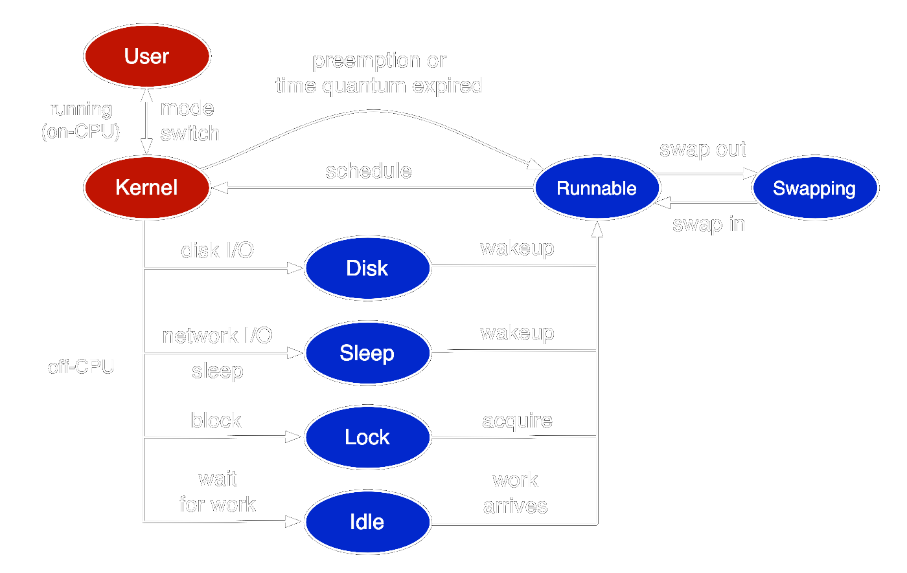

Optimisation de la lecture parallèle de fichiers
Maël Kerbiriou
GATB

Besoins
- Algorithmes bioinformatique limités par les entrées sorties
- Limite de la parallélisation
- Example : Lecture d'un fichier gzip
- Lecture de plusieurs fichiers en parallèle ⇒ Gain potentiel
Latences
Accès aux données
Une opération de lecture introduit une dépendance de donnée
Latences
Appels système, ordonancement des tâches
stdio/iostream
amortir avec un tampon
- Tous les appels
fread()ne délèguent pas àread()
read()
Performance de la lecture en parallèle
Lecture de 4 fichiers de 560Mo sur 4 threads
read()
Thread dédié à la lecture
- Lit un bloc de chaque fichier par tour
read()
Cache système et prefetching
- L'OS entretient son propre cache ⇒ prefetching
- Possibilité de conseiller le comportement du prefetching
fadvise()

mmap()
- Permet d'accéder le contenu du fichier via la mémoire
- Chargement à la demande dans le cache ⇒ pagefault couteux